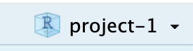
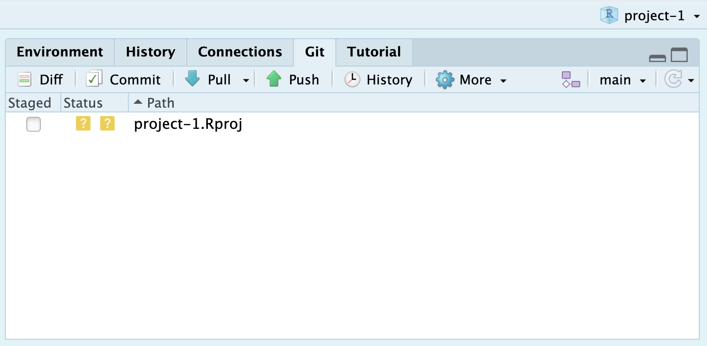
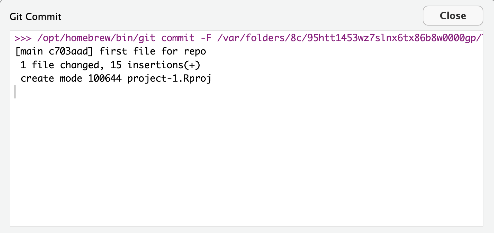
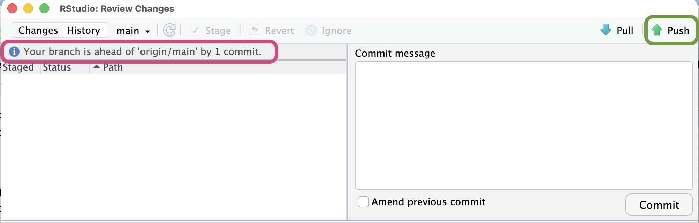
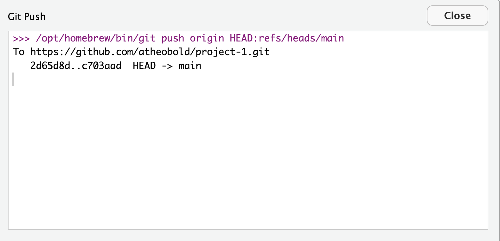

Project Checkpoint 1
Now that you have been assigned a dataset, this week we are focused on acquiring the data, investigating how the data were cleaned, and working with your group to pose research questions that could be addressed with these data.
By the end of the week, you should have a draft report which:
describes the context of the data
explains what cleaning has been done to the data
poses at least two research questions that could be addressed with these data
poses at least two research questions that could be addressed using supplemental data
sketches out two visualizations that could be made to address the research questions you posed above
One of our favorite tools for making sketches of data visualizations is Excalidraw. This is a free tool!
Here is an example of a sketch we made for teaching ggplot in Introduction to R:
![A graphic displaying the relationship between a dataset (on the left) and a plot (on the right). The graphic uses colors and arrows to indicate where a column in the dataset is being mapped on the plot. The 'study_year' variable is circled in green and is being mapped to the x-axis. The 'median_wk_cost' variable is circled in red and being mapped to the y-axis. The 'county_name' variable is circled in purple and is being mapped to the color aesthetic. Finally, the visualization on the right indicates that points will be made using geom_point and lines will be made using geom_smooth.](images/excalidraw-sketch.png)
Submission
You will submit both your HTML report and the link to the GitHub repository where your report lives. In GitHub, you will need to make a new repository where your project materials will live.
Create a GitHub Repository
First, you will need to create a new GitHub repository. Here is a document walking you through the 10 steps for accomplishing this:
Clone Your Repository into RStudio
Now that you have a repository, you need to clone it into RStudio so your local changes can be pushed into your repository. Here is a document walking you through the 8 steps for accomplishing this:
Push Your Changes to GitHub
Once you click “Create Project,” RStudio will open your project. You will know the project it has open based on the blue cube that appears in the upper right hand corner of your project (

).If you click on the “Git” tab in the upper right pane, you should see one file listed (project-1.Rproj). There is a yellow question mark next to this file meaning it is a new file that is not currently being tracked.

To add this file to your repository, you need to click on the “Commit” box (with the green check mark by it). That will open a popup window like this:
![A screenshot of the popup window that opens when you select 'Commit' on the Git tab. On the left, the popup shows the file that is being staged, as indicated by the box that is checked next to the file name. On the right, the commit message for the file is displayed, describing the changes made to the file: 'first file for repo'. Finally, the 'Commit' button at the bottom of the commit message box is hightlighted in blue, indicating it should be clicked once the file has been stages and a message has been written.](images/stage-commit-message.png)
From here you need to first check the box next to the file to stage it, this adds it to the list of files that will be pushed to GitHub. Next, you need to write a commit message in the textbox. Once you’ve completed these steps, you click the “Commit” button to commit these changes.
Once you click the “Commit” button, you should see a message like this appear, indicating that your commit was successful. Go ahead and hit “Close” to return to RStudio.

Now, your Git tab should show that your branch (the local copy of your repo) is one commit ahead of the origin (the repository on GitHub).

The final step is to push the changes to GitHub. If you click on the “Push” icon (with the up arrow), the changes you committed will be pushed to GitHub. Similar to the commit message, if RStudio successfully pushed the changes you will get a message saying your changes were successfully pushed (HEAD -> main).

main').">Four Steps to Follow Every Time
You only need to setup your repository once, but you will need to commit and push changes frequently. Our best advice is to commit and push small changes (e.g., one section of a report, one visualization, one table).
Every time you make a change to a document (new or existing), you will need to follow these four steps:
- Stage the file—check the box next to the file.
- Write a commit message—describe what changes you made.
- Click “Commit” to log these changes.
- Click “Push” to send these changes up to GitHub.